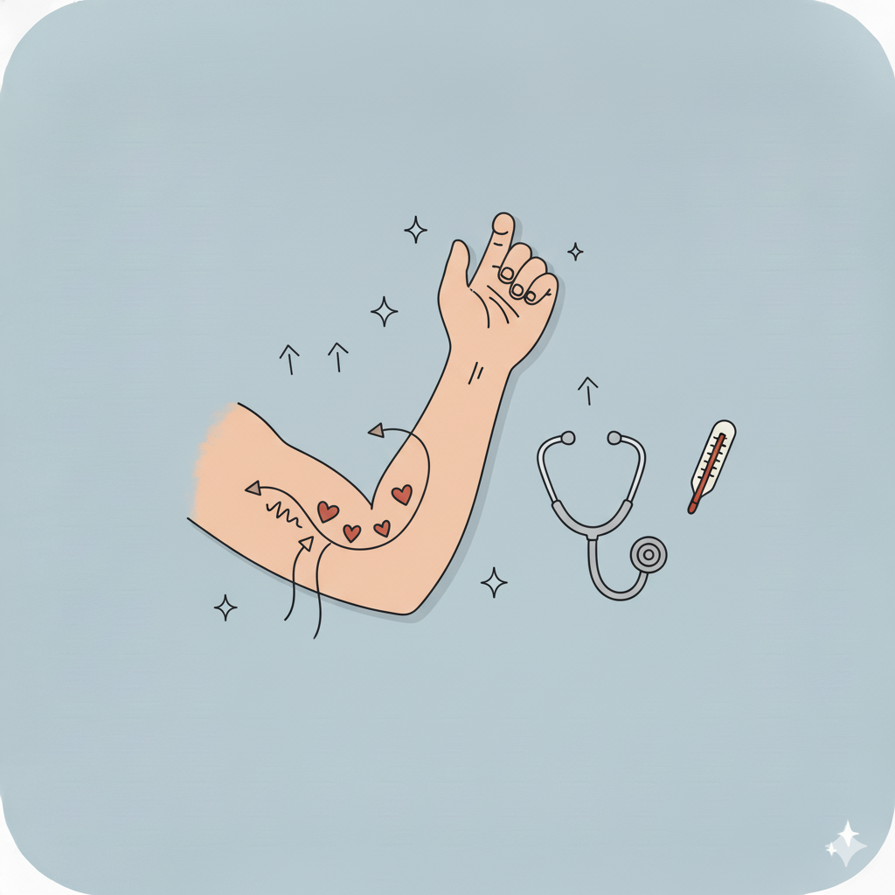
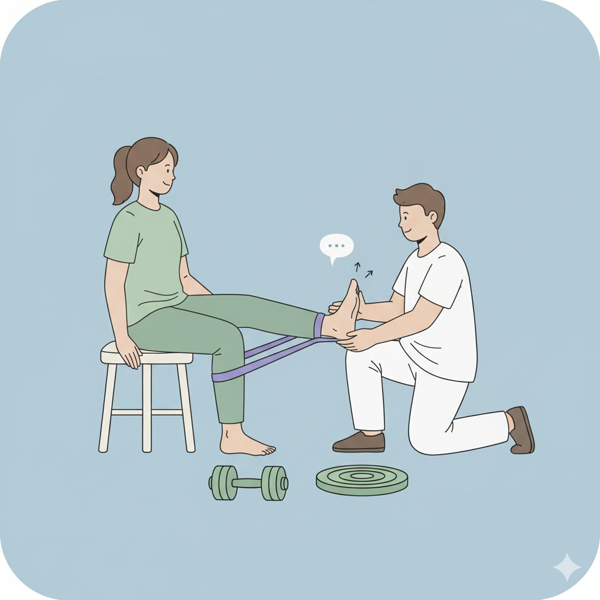
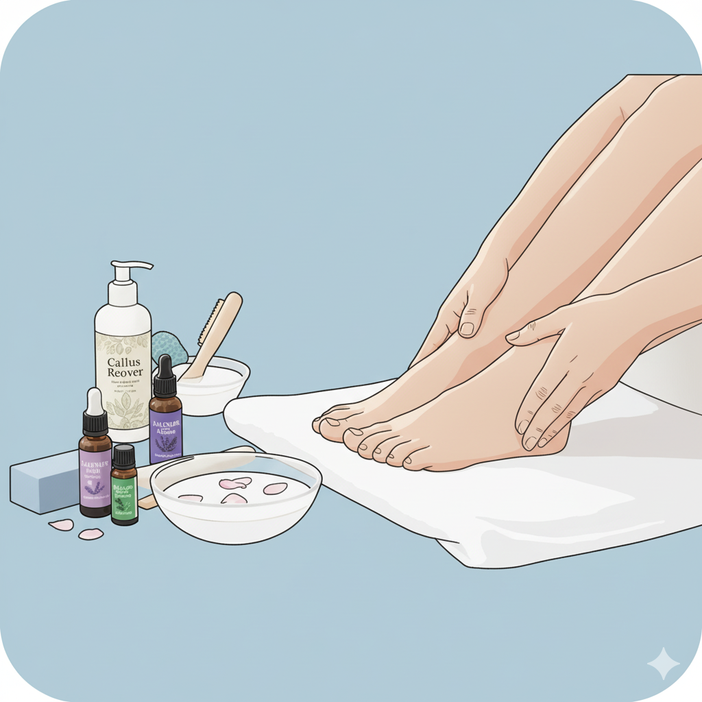
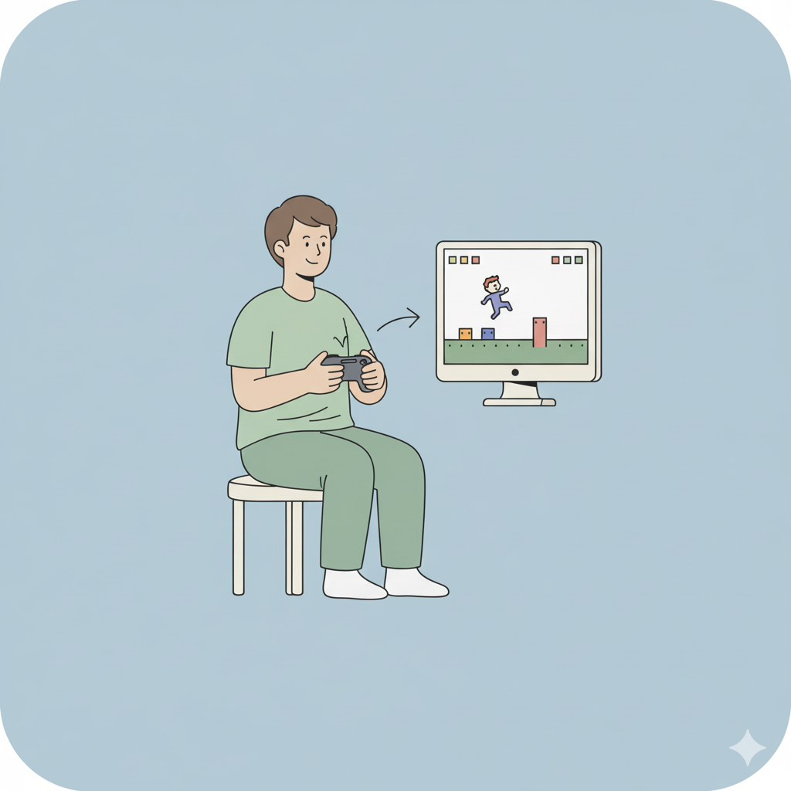

お友達特典
いつまでも健やかに過ごすために
透析治療を続けていく上で役立つ、健康維持のための情報や、頭の体操になる楽しいコンテンツをご紹介します。気になる項目を選んでご覧ください。

シャント管理について
透析に欠かせないシャントを長持ちさせるための、日常のケアや注意点を解説します。

運動療法について
体力の維持とQOL向上のための、安全な運動のポイントや体操動画をご紹介します。
食事療法について
元気な体をつくるための、食事の基本や塩分・水分管理のコツ、レシピを掲載しています。

フットケアについて
足のトラブルを防ぐための、毎日の観察ポイントと正しいケア方法を解説します。

ミニゲーム
動体視力と集中力を鍛える、簡単なゲームで頭の体操をしましょう。
総合情報ポータルへ戻る